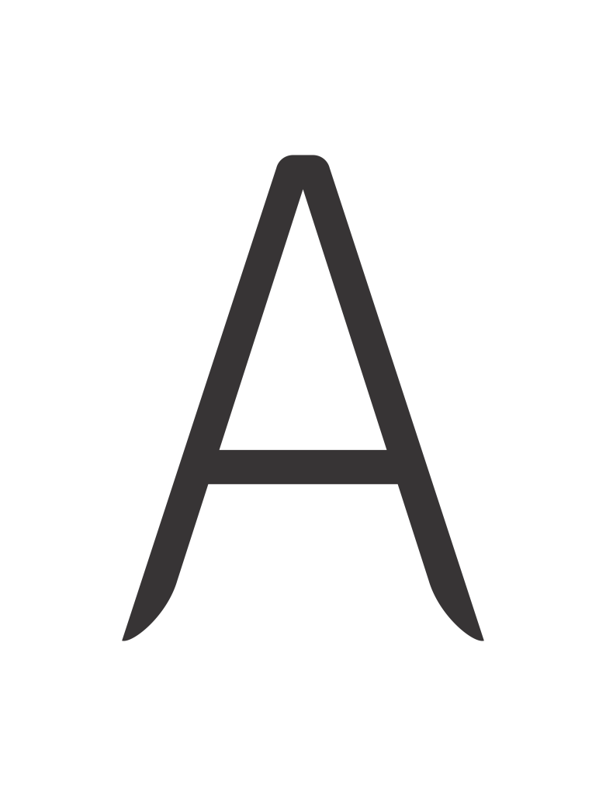

Fonte Temática do Futurismo
Esta é uma coleção de glifos que eu desenvolvi para uma fonte conceitual sobre o tema futurismo. Meu principal esforço foi no sentido de capturar algumas das tendências visuais do movimento, tais como o domínio de linhas retas e curvas, acompanhadas por pontas afiadas, enquanto procurei manter a simplicidade visual. Busquei com estes elementos sugerir velocidade e movimento.
